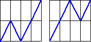
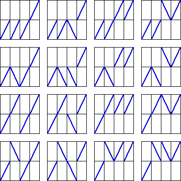
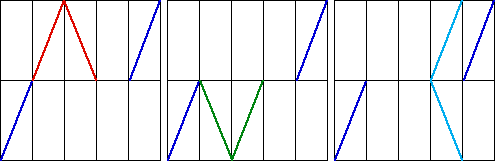

| 3. (a) Because all the dti are equal, all the dYi
must be equal if the cartoon is to be unifractal. There are two continuous
unifractal generators from the given initial segments. |
|  |
| |
| (b) Dropping the requirement of continuity, we must place one segment in 1/4 ≤ t ≤ 1/2, and
one segment in 1/2 ≤ t ≤ 3/4. Each can be increasing or decreasing, and in either interval
0 ≤ Y ≤ 1/2 and 1/2 ≤ Y ≤ 1. This gives 4⋅4 = 16 combinations. |
|  |
| |
| (c) None is possible. |
| If the segment in 1/5 ≤ t ≤ 2/5 moves up, the segment in
2/5 ≤ t ≤ 3/5 moves down, ending at (3/5, 1/2). |
| If the segment in 1/5 ≤ t ≤ 2/5 moves down, the segment in
2/5 ≤ t ≤ 3/5 moves up, ending at (3/5, 1/2). |
| From (3/5, 1/2) moving either up or down does not
give a continuous generator. |
|  |
| |
| (d) Dropping the requirement of continuity, we must place one segment in 1/5 ≤ t ≤ 2/5,
one segment in 2/5 ≤ t ≤ 3/5, and one segment in 3/5 ≤ t ≤ 4/5. Each can be increasing
or decreasing, and in either interval
0 ≤ Y ≤ 1/2 and 1/2 ≤ Y ≤ 1. This gives 4⋅4⋅4 = 64 combinations. |